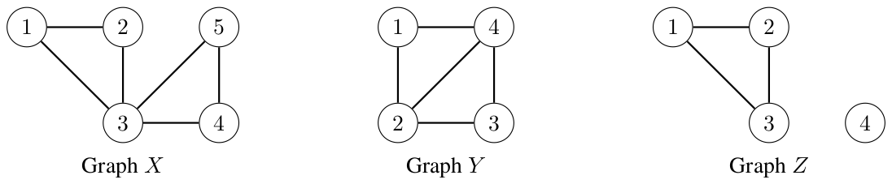
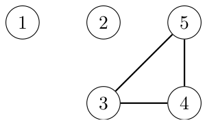

Cactus Connectivity
You are interested in the topic of graphs and their properties. In this problem, we assume that all graphs are simple undirected graphs, meaning there is at most one edge connecting any pair of vertices and each edge connects different vertices.
A simple cycle of a graph is a sequence of three or more distinct vertices \((v_1, v_2, \ldots, v_c)\) such that there exists an edge connecting vertices \(v_i\) and \(v_{i+1}\) for each \(1 \le i \lt c\) and there also exists an edge connecting vertices \(v_1\) and \(v_c\). For a simple cycle \((v_1, v_2, \ldots, v_c)\), its edge set is defined as \(\{(v_1, v_2), (v_2, v_3), \ldots, (v_{c-1}, v_c), (v_c, v_1)\}\), where \((v_i, v_j)\) represents an edge connecting vertices \(v_i\) and \(v_j\). Two simple cycles are the same if they share the same edge set.
A graph is a cactus if any two distinct simple cycles share at most one common vertex. For example, Figure C.1 illustrates three graphs. Graph \(X\) is a cactus since the two simple cycles \((1, 2, 3)\) and \((3, 4, 5)\) only share vertex \(3\) as the common vertex. Note that the sequence of vertices \((1, 2, 3, 4, 5, 3)\) does not form a simple cycle since vertex \(3\) appears twice. Also, the simple cycle \((2, 3, 1)\) is the same simple cycle as the simple cycle \((1, 2, 3)\). Meanwhile, graph \(Y\) is not a cactus since the two simple cycles \((1, 2, 4)\) and \((2, 3, 4)\) share vertices \(2\) and \(4\) as the common vertices. Graph \(Z\) is a cactus since there is only one simple cycle.

A graph is connected if there is a path connecting every pair of vertices. In particular, a graph with one vertex is connected.
For any positive integer \(k\), a graph is \(k\)-edge-connected if, for any set of fewer than \(k\) edges, removing those edges leaves the graph connected. In particular, all connected graphs are \(1\)-edge-connected. For example, graph \(Y\) in Figure C.1 is \(1\)-edge-connected and \(2\)-edge-connected, but not \(3\)-edge-connected, since removing both edges incident to vertex \(1\) does not leave the graph connected.
A graph \(H\) is a supergraph of a graph \(G\) if \(H\) can be obtained by adding zero or more vertices and edges to \(G\) without removing any vertices and edges from \(G\). Note that two graphs are the same if they have the same set of vertices and the same set of edges. For example, in Figure C.1 above, graph \(X\) is a supergraph of graph \(Z\), while graph \(Y\) is not a supergraph of graph \(Z\) since it is missing the edge connecting vertices \(1\) and \(3\).
The connectivity value of a graph \(G\) is the smallest positive integer \(k\) such that, for any \(k\)-edge-connected graph \(H\) that is a supergraph of \(G\), removing all the edges of \(G\) from \(H\) keeps \(H\) connected. For example, in Figure C.1 above, graph \(X\) is a \(2\)-edge-connected supergraph of graph \(Z\), and removing all the edges of \(Z\) from \(X\) leaves vertices \(1\) and \(2\) disconnected from the rest, as illustrated by Figure C.2 below. Therefore, the connectivity value of \(Z\) is more than \(2\). It can be shown that the connectivity value of \(Z\) is \(3\).

You are given a cactus with \(n\) vertices and \(m\) edges, where the vertices are numbered from \(1\) to \(n\) and the edges are \(1\) to \(m\). Edge \(i\) connects vertices \(u_i\) and \(v_i\). You are required to compute the connectivity value of the cactus.
Input
The first line of input contains two integers \(n\) and \(m\) (\(1 \le n \le 100\,000; 0 \le m \le 200\,000\)). The \(i\)-th of the next \(m\) lines contains two integers \(u_i\) and \(v_i\) (\(1 \le u_i \lt v_i \le n\)). The input represents a cactus with at most one edge connecting any pair of vertices.
Output
Output the connectivity value of the given graph.
4 3 1 2 2 3 1 3
3
Explanation for the sample input/output #1
This corresponds to graph \(Z\) from the problem description.
3 0
1
Explanation for the sample input/output #2
Any \(1\)-edge-connected supergraph is a connected graph. Since the given graph has no edges, removing all the edges of the given graph from a connected graph keeps the graph connected.